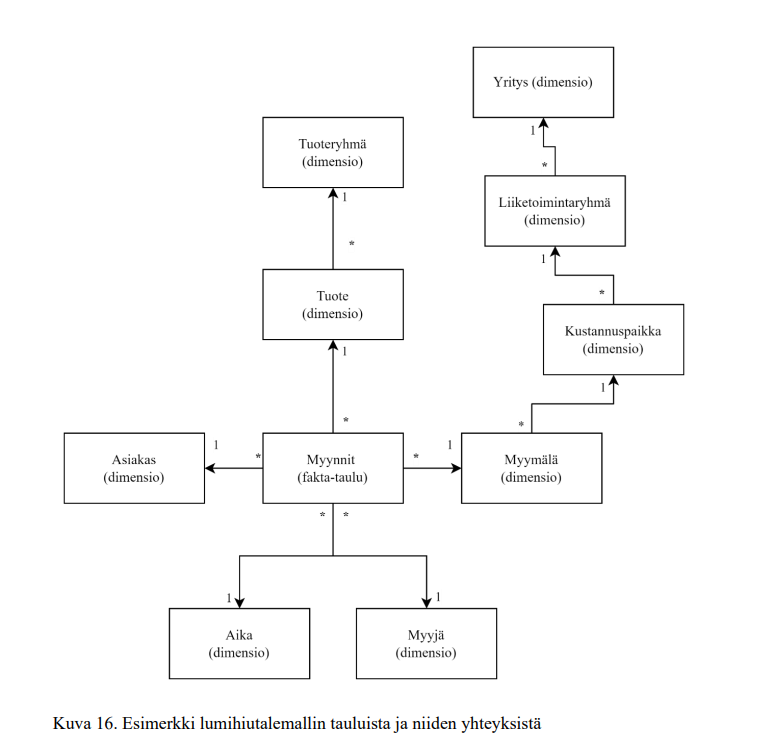

Lumihiutalemalli (Snowflake Schema) on tähtimallia muistuttava tietomalli. Toimintaperiaatteet ovat datan normalisointiin liittyen samanlaiset mutta lumihiutalemallin rakenne on hieman erilainen. Lumihiutalemallissa dimensioiden kuvaava tieto sijaitsee usein useammassa eri taulussa, jotka yhdistyvät syvemmälle dataan, kuten kuvasta 16 ilmenee.

Kuva 16. Esimerkki lumihiutalemallin tauluista ja niiden yhteyksistä
Lumihiutalemallissa esimerkiksi suuressa organisaatiossa yksi yritys voi sisältää useamman liiketoimintaryhmän ja yksi liiketoimintaryhmä taas voi sisältää useamman kustannuspaikan, ja yhdellä kustannuspaikalla voi olla useampi myymälä. Tämänkaltainen rakenne kuitenkin vaikeuttaa datan lukemista.
Ferrari ja Russo (2017, s.223) pitävät kirjassaan lumihiutalemallia Business Intelligencen maailmassa yhtenä yleisimmin käytetyistä tietomallityypeistä. Ferrari ja Russo (2017, s.223) mainitsevat kirjassaan totuudeksi myös sen, etteivät lumihiutalemallit ole huonoja ratkaisuja, vaikka tähtimalliin verratessa suorituskyky heikkenee lievästi. Lumihiutalemallin käyttötarve on usein välttämätön. Samalla lumihiutalemallia ei kuitenkaan suositella käytettäväksi, jos se ei ole välttämätöntä, sillä yksinkertaisempi tietomalli tekee DAX:lla koodaamisesta ja kehittämisestä helpompaa. Ohjaavan tiedon sisällyttäminen yhteen dimensiotauluun on Power BI - ja SSAS-mallinnuksessa parempi toimintatapa kuin tiedon sisällyttäminen useampaan tauluun. Kehittäminen on nopeampaa ja yksittäisessä taulussa sijaitsevat dimensiotiedot helpottavat DAX-koodaamista ja tekevät siitä helpommin luettavaa.